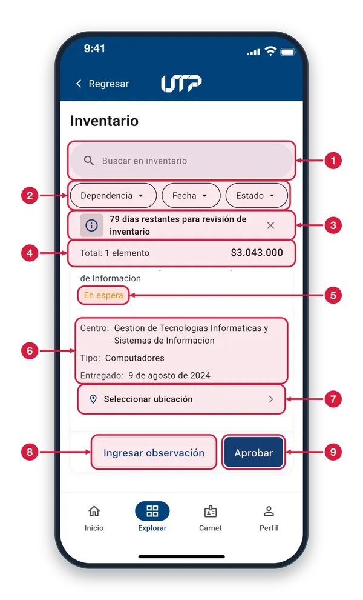
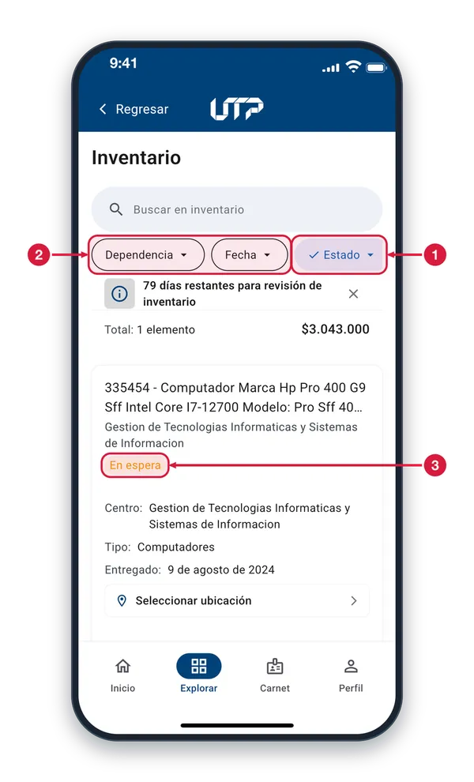
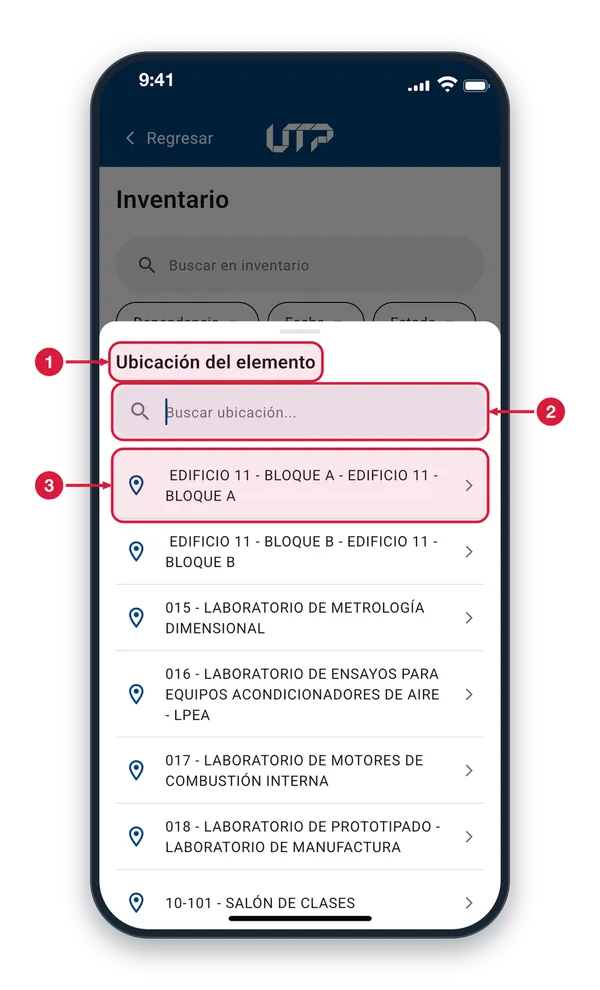
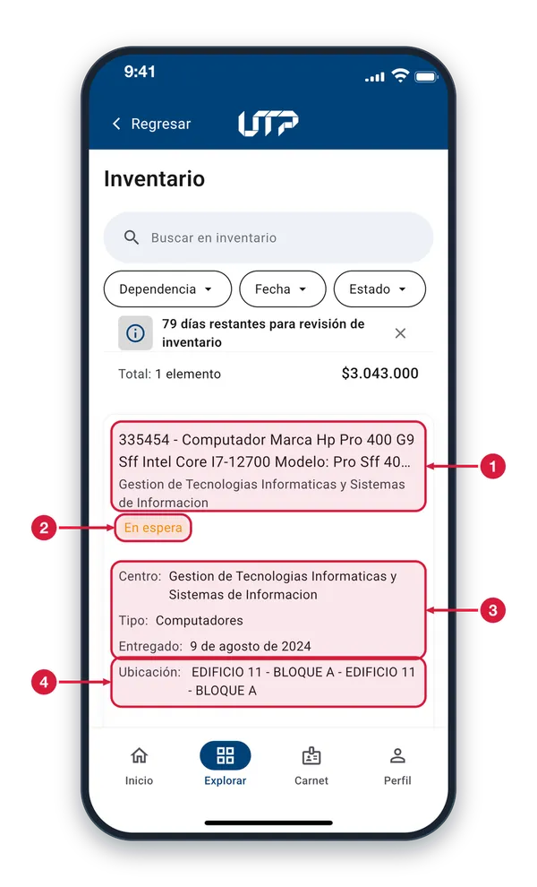
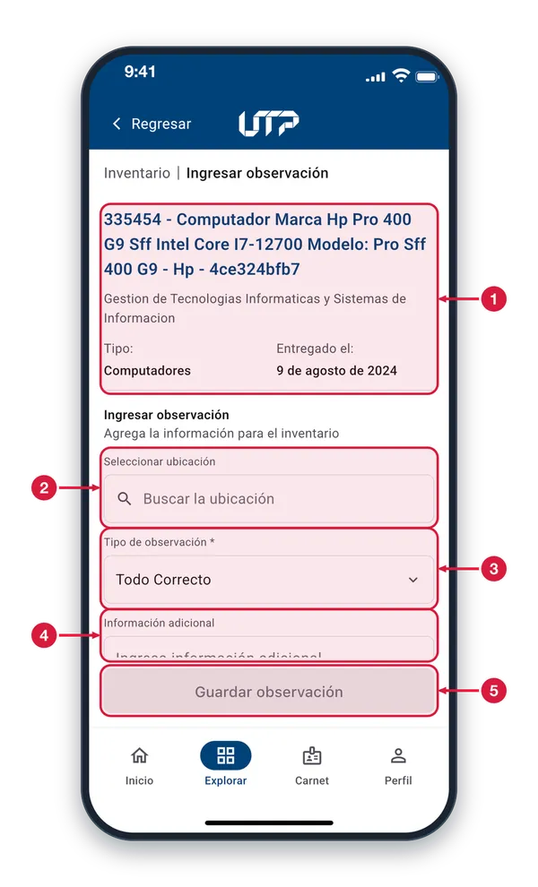
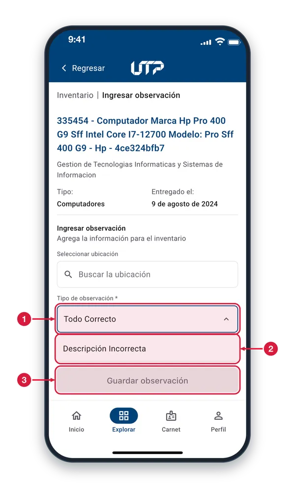

Gestiona y reporta el estado de los activos institucionales asignados a tu dependencia: tipo, fecha de entrega, ubicación y estado actual de cada equipo.
El módulo de Inventarios cuenta con:
Lista de equipos con código, tipo y ubicación
Filtros por dependencia, fecha y estado
Ingresar observación con ubicación y tipo de novedad
Aprobar o rechazar inventarios pendientes
Aviso de los días restantes para la revisión
Solo podrás ver y hacer uso del módulo INVENTARIOS cuando te loguees en la aplicación
Lista de inventario1 de 6
Aquí ves los equipos asignados a tu dependencia. Revísalos y repórtalos antes de que se acaben los días de revisión.

Buscar en inventario Escribe la placa o parte de la descripción del equipo para filtrar la lista. Si nada coincide, aparece «Sin coincidencias».
Ordenar la lista Dependencia, Fecha y Estado ordenan la lista. Toca uno para activarlo y otra vez para invertir el orden; solo hay un orden activo a la vez.
Días de revisión Indica cuántos días quedan para revisar el inventario. Toca la «x» para ocultar el aviso.
Total de elementos y valor Cuenta los elementos de la lista y suma su valor. Cambia si buscas, porque solo suma los que se ven.
Estado del elemento Indica en qué va la revisión: «En espera» es pendiente. Otros estados: Sin ubicar, Aprobado, Nuevo, De baja y Fuera de periodo.
Datos del equipo Centro (la dependencia), tipo de equipo y fecha de entrega. Sobre la etiqueta de estado, la tarjeta trae el código y la descripción del equipo.
Seleccionar ubicación Toca para elegir en una lista dónde está el elemento; la ubicación queda guardada al elegirla. Cuando ya la tiene, aquí se muestra su nombre.
Ingresar observación Abre un formulario para reportar el estado real del elemento: ubicación, tipo de observación e información adicional.
Aprobar Aprueba el elemento tal como está, al instante y sin pedir confirmación; pasa a Aprobado. No exige elegir ubicación. Solo aparece en los elementos pendientes.
Ordenar por estado2 de 6
Los chips Dependencia, Fecha y Estado ordenan la lista de elementos. Aquí está activo el de Estado.

Chip Estado activo La palomita y el fondo azul indican que este orden está activo. Tócalo otra vez para invertirlo: la flecha cambia de sentido. Si no se ve completo, desliza la fila.
Dependencia y Fecha Dependencia ordena por el nombre de la dependencia y Fecha, por la fecha de entrega. Solo uno puede estar activo a la vez.
Orden de los estados Este orden sigue la secuencia En espera, Sin ubicar, Aprobado, Nuevo, De baja y Fuera de periodo. Al invertirlo, va al revés.
Elegir la ubicación3 de 6
Se abre al tocar «Seleccionar ubicación» en la tarjeta de un elemento. Elige el lugar donde está el equipo.

Ubicación del elemento Aquí eliges dónde está el equipo. Para salir sin elegir, toca fuera de la hoja.
Buscar ubicación Escribe parte del nombre del edificio, laboratorio o salón para acortar la lista, sin importar mayúsculas ni tildes. Si nada coincide, verás «No se encontraron ubicaciones».
Lugar de la lista Cada fila es un lugar. Toca el que corresponda: queda guardado como ubicación del elemento y la hoja se cierra. Desliza para ver más lugares.
Ubicación asignada4 de 6
Al elegir un lugar, la hoja se cierra y la tarjeta muestra la ubicación que quedó guardada.

Código y descripción Primero va el código (placa) y la descripción del equipo; debajo, la dependencia a la que está asignado.
Estado En espera Sigue «En espera»: elegir la ubicación no aprueba el elemento. Para aprobarlo, desliza hasta los botones del final de la tarjeta.
Centro, tipo y entrega La dependencia, el tipo de equipo y la fecha en que se entregó.
Ubicación guardada Muestra el lugar que elegiste. Quedó guardado al seleccionarlo y el botón «Seleccionar ubicación» ya no aparece.
Ingresar observación5 de 6
Se abre con «Ingresar observación» en la tarjeta de un elemento. Reporta su ubicación y su estado real.

Elemento que reportas El equipo que estás reportando: código, descripción, dependencia, tipo y fecha de entrega. Revísalo antes de guardar.
Seleccionar ubicación Toca el campo, escribe para buscar el lugar y elige uno de la lista. Necesitas una ubicación para poder guardar. Si el elemento ya tenía una, aparece aquí.
Tipo de observación Obligatorio (*). Toca para abrir la lista y elegir cómo está el elemento: Todo correcto, Descripción incorrecta, Bien en desuso, Bien en mal estado o Bien faltante.
Información adicional Opcional. Escribe aquí cualquier detalle que quieras dejar anotado sobre el elemento.
Guardar observación Se activa al elegir ubicación y tipo; aquí está gris porque falta la ubicación. Al tocarlo se guarda, aparece «Observación guardada», el elemento pasa a Aprobado y vuelves a la lista.
Tipos de observación6 de 6
Al tocar el campo «Tipo de observación» se despliega la lista de opciones; elige la que describe el elemento.

Tipo de observación Muestra el tipo elegido; con la lista abierta, la flecha apunta hacia arriba. Tócalo otra vez para cerrarla sin cambiar nada.
Lista de opciones Todo correcto, Descripción incorrecta, Bien en desuso, Bien en mal estado o Bien faltante. Desliza la lista para ver todas; al tocar una queda elegida y la lista se cierra.
Guardar observación Sigue gris mientras falte la ubicación o el tipo de observación, que es obligatorio.